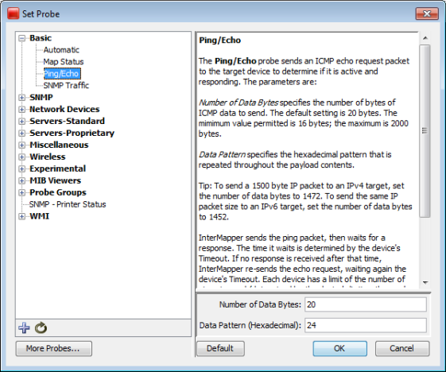

The Description section of a probe file contains text that will be displayed as a description of the probe in the Set Probe window. All probe types can have a description section. It is defined using the following tags:
<description> ... </description>
The description can be formatted using IMML, InterMapper's Markup Language. The Example Probe File shows a sample description section.

The Set Probe window, showing the description field. Note that the blue underlined links are actually links to the relevant RFC specifications.